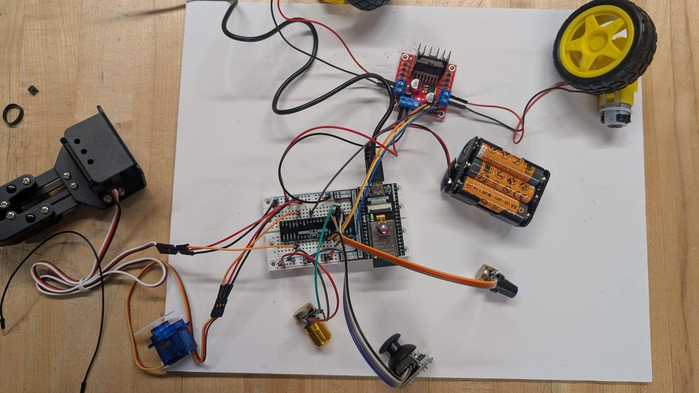
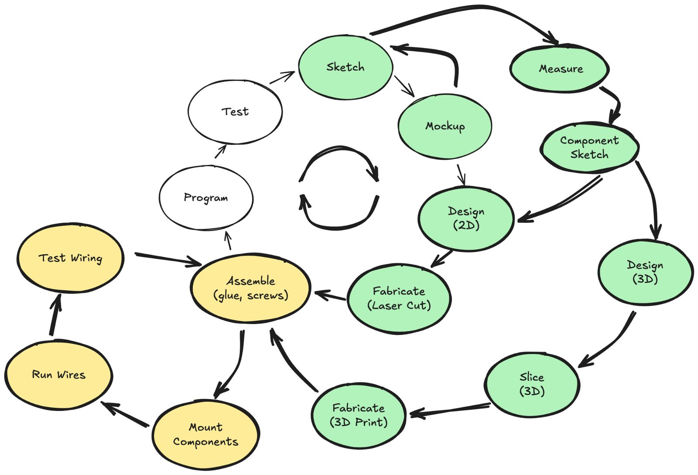
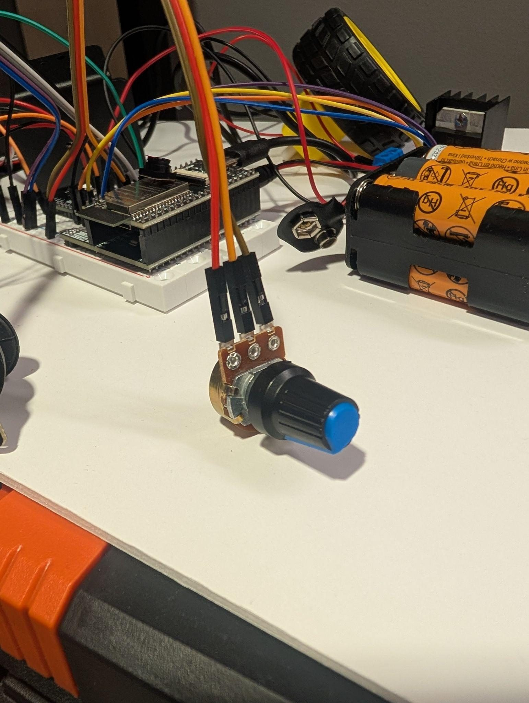

Sketch & Prototype
Sketch concept variations; build a foam core mockup.

Class 5 · Week 5 · Fall 2026
Today your robot gets a brain. We wire motors, sensors, and controls on the breadboard, install MicroPython, and make AI our coding partner.

Robo Challenge · roadmap
Today we're at WK4 — electronics. Here's how the robot build comes together.
Sketch concept variations; build a foam core mockup.
Create a laser-ready 2D design; cut structural parts.
Model 3D parts; 3D print functional parts.
Wire motors, sensors, and controls; program with MicroPython + AI.
Connect to a wireless network; build a remote control interface.
Final integration and test runs.
Demonstrate the robot with mechanical systems and motors mounted.
WK4 · Electronics — wire motors, sensors, and controls on a breadboard, and program basic movements using MicroPython and AI.
Robo Challenge · today
The mechanics are nearly done — today we bring the electronics to life.
Today's plan
Where we are in the build
Sketch, mockup, design, and fabrication are behind you. Now we assemble, run wires, test the wiring, program, and test again.

Your kit
Freenove FNK0046 Super Starter Kit for ESP32 WROVER — everything you need for the electronics project.
ESP32-WROVER board, GPIO extension board, and a solderless breadboard.
Jumper wires, LEDs, resistors (220Ω, 1K, 10K), push buttons, USB cable.
LCD and 7-segment displays, buzzers, joystick, potentiometers, servo, TT motor + wheel, motor driver, ultrasonic sensor, camera.
No paper tutorial — the download link for the tutorial and code is on the box.
The brain
A powerful, small controller with onboard wireless and camera.
Specs
What it controls
Motors through the driver, servos, joystick, potentiometers, sensors, and displays — the brain of your robot.
Breadboard basics
No soldering — push parts and wires into the holes and they connect.


Each row of five holes is connected horizontally, and the center channel separates the two sides.
The vertical rails along the edges carry 5V, 3.3V, and GND to every row.
Your ESP32 plugs into the GPIO extension board: any of the horizontal holes in a pin's row connects to that pin — for example, pin 34.
Before you wire
Three steps before the first circuit.

Clip the ESP32 and its GPIO extension board across the breadboard's center channel.
5V, 3V3, GND, and the numbered GPIO pins are printed on the extension board. Check before you plug anything in.

MicroPython
Your ESP32 runs MicroPython — a tiny version of Python.
Follow the instructions
"Put the snake on the plane" — flash MicroPython onto your ESP32, then connect with Thonny.
go.tufts.edu/esp32Do this once per board. After that, Thonny connects and runs your code on the robot.
The MicroPython snake needs a plane — your ESP32 board.
First program
Type it in Thonny (or ask AI for it), then run it on the board.
blink.py
from machine import Pin
import time
led = Pin(2, Pin.OUT)
while True:
led.on() # Turn LED on
time.sleep(1) # Wait 1 second
led.off() # Turn LED off
time.sleep(1) # Wait 1 second
Challenge
Can you make it blink faster or slower?
AI as a coding partner
Go to claude.ai and enter this prompt.
The prompt
I have an ESP32 WROVER with MicroPython and an SG90 servo.
I want to move the servo arm from 0 to 180 degrees and back.
Generate the code and provide beginner-friendly wiring instructions.
Describe your parts, your goal, and ask for beginner-friendly wiring — one sentence per idea.
Inputs
Your robot reads the world through inputs — here's how two common ones wire up.


Potentiometer
KY-023 joystick
Outputs · servos
The SG90 micro servo rotates about 180° — perfect for arms, gates, and grippers.
Servo wiring
On the robot
Servo 1 and Servo 2 wire up the same way — match the colors, not the memory.
Outputs · motors
The driver is the muscle: the ESP32 sends signals, the L298N sends power to the motors.


L298N wiring
The full picture
Two servos, two DC motors, two joysticks, one driver, one brain.
Read it like a map
Wire from a diagram, never from memory — and ask AI to explain any wire you don't recognize.
At Nolop today
Mechanical assembly review, then AI-assisted wiring at the makerspace.
Today at Nolop
Tips
Name your parts exactly
Individual assignment
Design and build a fun electronics project using your ESP32 kit — with AI as your coding partner.
Requirements
The process — all in ONE chat
Need ideas? The kit tutorial has example projects and code to borrow from.
Individual assignment · deliverables
A link to your chat — one continuous conversation, start to finish.
A demo of the working project with a voice-over explanation.
A written reflection on the process.
Bring your electronics project to class for a demo.
You're graded on collaboration and learning, not coding skills. Keep one chat, iterate often, and ask lots of questions!
In the lab
Wiring, testing, and mounting — the messy middle of the build.



By the end of class
Before you leave, complete your personal reflection for today's class.
go.tufts.edu/reflect
Before you go
Next week: Connectivity — connect your microcontroller to a wireless network and build a remote control interface.
Where to find us
Office hours
go.tufts.edu/meet_tvdv
Email
thomas.van_de_velde@tufts.edu
Course materials
tvande08.github.io/ENT-164